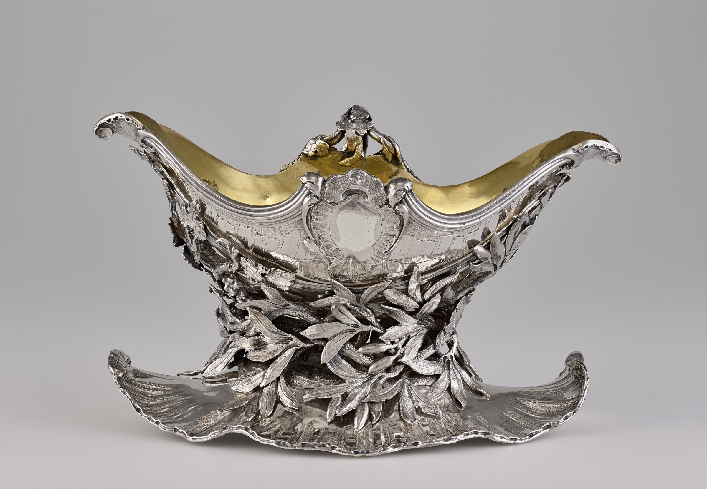

One class,
three placements
The Getty catalogue names a pointer-head discharge on the sauceboat, on its stand's cradle, and beneath the stand's base. Only the boat lip has a numbered close-up of the head.

The catalogue's components
Boat, cradle, base
Sauceboat
Proper left pouring lip. The catalogue links this location to Mark 9.3, the readable pointer head.
Cradle
Stand base
Rust lines mark described surfaces, not individual punches. The schematic has no photographic orientation.
One class in the record
The sauceboat is component 71.DG.76.a. The stand is 71.DG.76.b, built from a cradle and a base. The Getty names the 1762–1768 Paris pointer-head discharge at all three locations.
One detail in the catalogue
The lip alone has a numbered close-up of the pointer head. Cat. 9.4 shows the base underside; Mark 9.4 details the maker's stamp there, while the pointer head remains unreadable in the overview. The shared class does not establish use of one physical punch.
Jean-Baptiste François Chéret, Sauceboat on Stand, 1762–63, Getty Museum, 71.DG.76. The main collection image is CC0. Placement and component descriptions: Getty, French Silver, catalogue 9. Publication details are licensed CC BY-NC 4.0; Mark 9.3, Cat. 9.4, and Mark 9.4 are linked here, not reproduced.